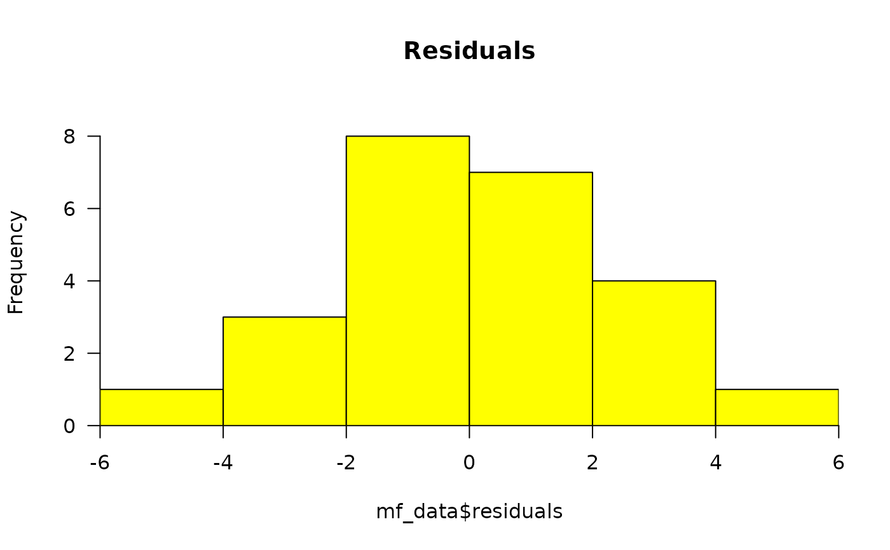
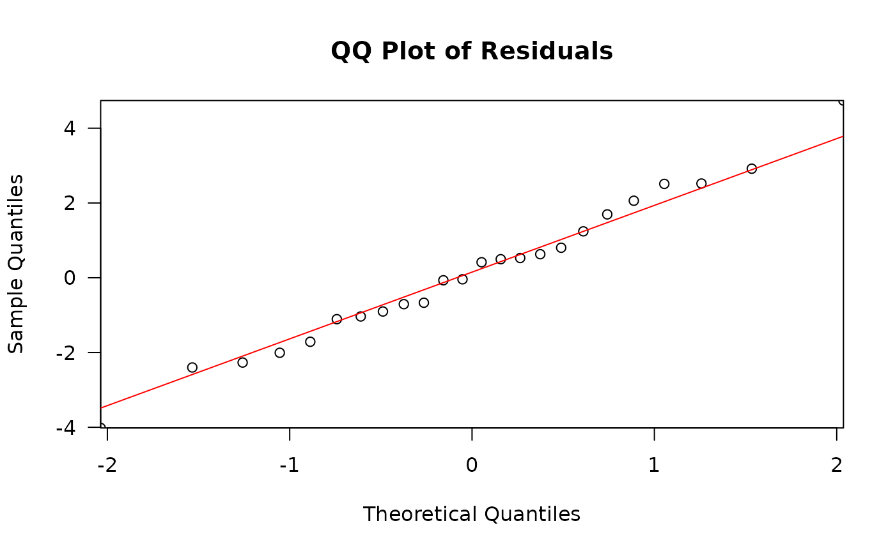

Perform linear modelling on mutation frequency for given fixed and random effects
Source:R/model_mf.R
model_mf.Rdmodel_mf will fit a linear model to analyse the effect(s) of given
factor(s) on mutation frequency and perform specified pairwise comparisons.
This function will fit either a generalized linear model (glm)
or, if supplied random effects, a generalized linear mixed-effects model
(glmer). Pairwise comparisons are conducted using the doBy
library (esticon) and estimates are then back-transformed. The
delta method is employed to approximate the back-transformed
standard-errors. A Sidak correction is applied to adjust p-values for
multiple comparisons.
Usage
model_mf(
mf_data,
fixed_effects,
test_interaction = TRUE,
random_effects = NULL,
reference_level,
muts = "sum_min",
total_count = "group_depth",
contrasts = NULL,
cont_sep = "\t",
...
)Arguments
- mf_data
The data frame containing the mutation frequency data. Mutation counts and total sequencing depth should be summarized per sample alongside columns for your fixed effects. This data can be obtained using
calculate_mf(summary=TRUE).- fixed_effects
The name(s) of the column(s) that will act as the fixed_effects (factor/independent variable) for modelling mutation frequency.
- test_interaction
a logical value. Whether or not your model should include the interaction between the
fixed_effects.- random_effects
The name of the column(s) to be analysed as a random effect in the model. Providing this effect will cause the function to fit a generalized linear mixed-effects model.
- reference_level
Refers to one of the levels within each of your fixed_effects. The coefficient for the reference level will represent the baseline effect. The coefficients of the other levels will be interpreted in relation to the reference_level as deviations from the baseline effect.
- muts
The column containing the mutation count per sample.
- total_count
The column containing the sequencing depth per sample.
- contrasts
a data frame or a filepath to a file that will provide the information necessary to make pairwise comparisons between groups. The table must consist of two columns. The first column will be a group within your fixed_effects and the second column must be the group that it will be compared to. The values must correspond to entries in your mf_data column for each fixed effect. Put the group that you expect to have the higher mutation frequency in the 1st column and the group that you expect to have a lower mutation frequency in the second column. For multiple fixed effects, separate the levels of each
fixed_effectof a group with a colon. Ensure that allfixed_effectsare represented in each entry for the table. Seedetailsfor examples.- cont_sep
The delimiter for importing the contrast table file. Default is tab-delimited.
- ...
Extra arguments for glm or glmer. The
glmerfunction is used when arandom_effectis supplied, otherwise, the model uses theglmfunction.
Value
Model results are output as a list. Included are:
model_data: the supplied mf_data with added column for the Pearson's residuals of the model.
summary: the summary of the model.
anova: the analysis of variance for models with two or more effects. Anova
(model)residuals_histogram: the Pearson's residuals plotted as a histogram. This is used to check whether the variance is normally distributed. A symmetric bell-shaped histogram, evenly distributed around zero indicates that the normality assumption is likely to be true.
residuals_qq_plot: the Pearson's residuals plotted in a quantile-quantile plot. For a normal distribution, we expect points to roughly follow the y=x line.
point_estimates_matrix: the contrast matrix used to generate point-estimates for the fixed effects.
point_estimates: the point estimates for the fixed effects.
pairwise_comparisons_matrix: the contrast matrix used to conduct the pairwise comparisons specified in the
contrasts.pairwise_comparisons: the results of pairwise comparisons specified in the
contrasts.
Details
fixed_effects are variables that have a direct and constant effect on the
dependent variable (ie mutation frequency).They are typically the
experimental factors or covariates of interest for their impact on the
dependent variable. One or more fixed_effect may be provided. If you are
providing more than one fixed effect, avoid using correlated variables;
each fixed effect must independently predict the dependent variable.
Ex. fixed_effects = c("dose", "genomic_target", "tissue", "age", etc).
Interaction terms enable you to examine whether the relationship between the dependent and independent variable changes based on the value of another independent variable. In other words, if an interaction is significant, then the relationship between the fixed effects is not constant across all levels of each variable. Ex. Consider investigating the effect of dose group and tissue on mutation frequency. An interaction between dose and tissue would capture whether the dose response differs between tissues.
random_effects account for the unmeasured sources of statistical variance that
affect certain groups in the data. They help account for unobserved
heterogeneity or correlation within groups. Ex. If your model uses repeated
measures within a sample, random_effects = "sample".
Setting a reference_level for your fixed effects enhances the interpretability
of the model. Ex. Consider a fixed_effect "dose" with levels 0, 25, 50, and 100 mg/kg.
Intuitively, the reference_level would refer to the negative control dose, "0"
since we are interested in testing how the treatment might change mutation
frequency relative to the control.
Examples of contrasts:
If you have a fixed_effect "dose" with dose groups 0, 25, 50, 100,
then the first column would contain the treated groups (25, 50, 100), while
the second column would be 0, thus comparing each treated group to the control group.
25 0
50 0
100 0
Alternatively, if you would like to compare mutation frequency between treated dose groups, then the contrast table would look as follows, with the lower dose always in the second column, as we expect it to have a lower mutation frequency. Keeping this format aids in interpretability of the estimates for the pairwise comparisons. Should the columns be reversed, with the higher group in the second column, then the model will compute the fold-decrease instead of the fold-increase.
100 25
100 50
50 25
Ex. Consider the scenario where the fixed_effects
are "dose" (0, 25, 50, 100) and "genomic_target" ("chr1", "chr2"). To compare
the three treated dose groups to the control for each genomic target, the
contrast table would look like:
25:chr1 0:chr1
50:chr1 0:chr1
100:chr1 0:chr1
25:chr2 0:chr2
50:chr2 0:chr2
100:chr2 0:chr2
Troubleshooting: If you are having issues with convergence for your
generalized linear mixed-effects model, it may be advisable to increase
the tolerance level for convergence checking during model fitting. This
is done through the control argument for the lme4::glmer function. The
default tolerance is tol = 0.002. Add this argument as an extra argument
in the model_mf function.
Ex. control = lme4::glmerControl(check.conv.grad = lme4::.makeCC("warning", tol = 3e-3, relTol = NULL))
Alternate approach:
control = lme4::glmerControl(optimizer = "bobyqa", optCtrl = list(maxfun = 2e5))
Similar approaches may be taken for glm models.
Examples
# Example data consists of 24 mouse bone marrow
# samples exposed to three doses of BaP alongside vehicle controls.
# Libraries were sequenced with Duplex Sequencing using
# the TwinStrand Mouse Mutagenesis Panel which consists of 20 2.4kb
# targets = 48kb of sequence. Example data can be retrieved from
# MutSeqRData, an ExperimentHub data package:
## library(ExperimentHub)
## eh <- ExperimentHub()
## query(eh, "MutSeqRData")
# Mutation frequency data was precalculated using
## mf_data_global <- calculate_mf(mutation_data = eh[["EH9861"]],
## cols_to_group = "sample",
## retain_metadata_cols = c("dose_group", "dose"))
# We will model the effect of dose on mutation frequency min.
mf_example <- readRDS(system.file("extdata/Example_files/mf_data_global.rds",
package = "MutSeqR"
))
# We will compare all BaP dose groups to the control group
# using pairwise comparisons.
contrasts <- data.frame(
col1 = c("12.5", "25", "50"),
col2 = c("0", "0", "0")
)
# Fit the model
model <- model_mf(
mf_data = mf_example,
fixed_effects = "dose",
reference_level = "0",
muts = "sum_min",
total_count = "group_depth",
contrasts = contrasts
)
#> Reference level for factor dose: 0
#> Fitting GLM: glm(cbind(sum_min, group_depth) ~ dose, family = quasibinomial)
#> Max absolute residual: 4.73969242941171 (Row 14)

